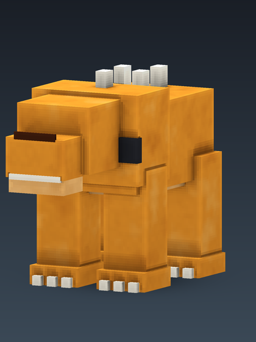

Wildmutt
Scan Wolf to unlock

- Hitbox width
- 1.0 blocks
- Hitbox height
- 1.3 blocks
- Form duration
- 6,000 ticks (5 min)
- Unlock
- Scan Wolf to unlock
Passive abilities
- Night Vision I
- Jump Boost II
- +30% movement speed
- +3 attack damage
Active power
Pounce, cooldown 60 ticks (3 sec).
DNA source
Wolf